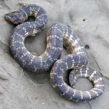
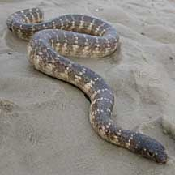
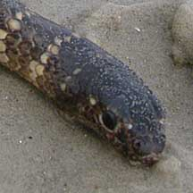
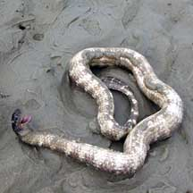
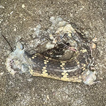

|
|
| snakes text index | photo index |
| Phylum Chordata > Subphylum Vertebrata > Class Reptilia > shore snakes |
| Marbled
sea snake Aipysurus eydouxii Family Elapidae updated Oct 2016 Where seen? This attractively-patterned snake was seen once on the sand bar of Chek Jawa in the early morning. It looked like it was stranded there at low tide. It is considered uncommon and usually found in coastal areas and estuaries. It is also known as the Spine-tailed seasnake. Features: About 1m long. A fat cylindrical body, with large rounded scales. It is also called the Beaded sea snake and Olive sea snake. It has a small head with rather large eyes. Like other sea snakes, it has a flattened paddle-shaped tail used like an oar to swim with, and valved nostrils which it can close when submerged. A venomous snake, it will NOT bite unless disturbed. There are apparently no records of this snake biting a human. In any case, it has tiny fangs. When stressed, it may instead writhe and turn upside down. Possibly pretending to be a dead or sick snake? Which is another reason why we should not touch even seemingly dead snakes. What does it eat? It is said to eat only fish eggs. Marbled babies: Mama snake bears live young. |
 Chek Jawa, Aug 02 |
 |
 Chek Jawa, Aug 02 |
 Writhing and turning upside down. |
 A piece of one on the intertidal. Changi Carpark 7, May 2025 Photo shared by Kelvin Yong on facebook. |
| Marbled sea snakes on Singapore shores |
On wildsingapore
flickr
|
Links
References
|